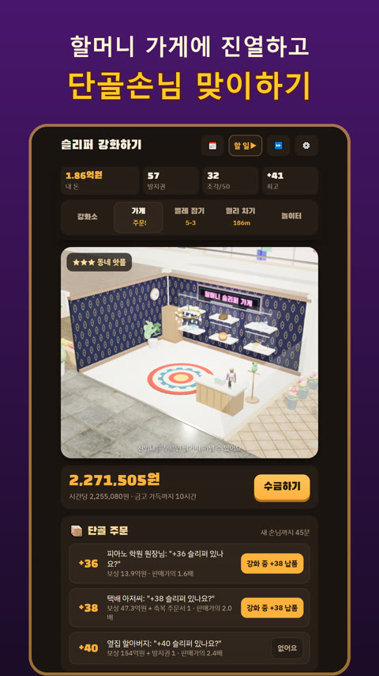
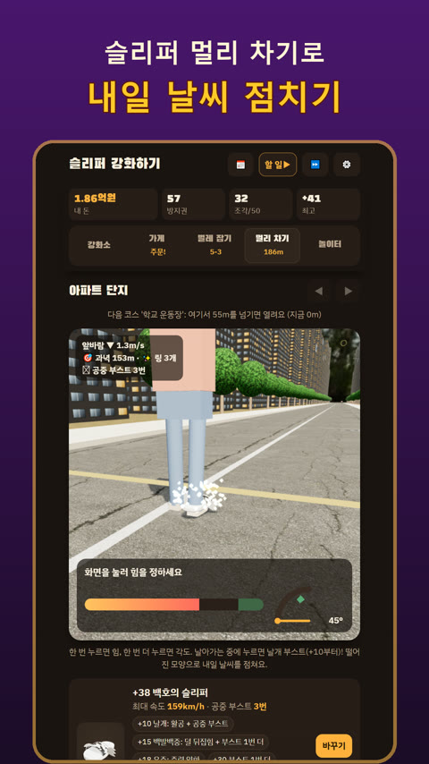

강화 게임 잘하는 법, 파괴 줄이는 요령 6가지
강화 게임은 버튼 한 번에 성공과 실패가 갈리는 단순한 게임이지만, 막상 해 보면 "여기서 한 번 더 누를까, 멈출까"를 계속 고민하게 됩니다. 높은 단계에서 아이템이 사라지면 그동안 모은 돈이 한순간에 날아가기 때문입니다. 처음 하는 분이 덜 아프게, 더 높이 올라가는 요령을 정리했습니다.
강화 결과는 보통 네 가지
| 결과 | 뜻 |
|---|---|
| 성공 | 한 단계 올라감 |
| 유지 | 단계는 그대로, 강화비만 나감 |
| 하락 | 한 단계 떨어짐 |
| 파괴 | 아이템이 사라짐 |
단계가 높을수록 성공 확률은 낮아지고 강화비는 비싸집니다. 그래서 낮은 단계에서는 빠르게, 높은 단계에서는 신중하게 가는 것이 기본입니다.
파괴 줄이는 요령 6가지
1. 누르기 전에 확률부터 봅니다
성공·하락·파괴 확률을 보여 주는 게임이라면, 파괴 확률이 눈에 띄게 커지는 단계를 기억해 두세요. 그 단계부터는 보호 아이템 없이 누르지 않는 것이 좋습니다.
2. 보호 아이템은 위험 구간에만 씁니다
파괴를 막는 아이템은 귀합니다. 파괴 위험이 없는 낮은 단계에서 쓰면 정작 필요한 순간에 모자랍니다.
3. 실패 보너스를 챙깁니다
실패할 때마다 다음 성공 확률이 조금씩 오르는 게임이 많습니다. 연속으로 실패했다면 오히려 지금이 누를 때일 수 있습니다.
4. 확률을 올리는 아이템은 높은 단계에 아껴 둡니다
확률을 올려 주는 주문서나 행운 효과는 성공 확률이 낮은 높은 단계에서 쓸 때 효과가 가장 큽니다.
5. 강화비는 따로 벌어 둡니다
돈이 바닥난 상태로 강화하면 실패 한 번에 흐름이 끊깁니다. 미니게임이나 꾸준한 수입으로 여유 자금을 먼저 모아 두세요.
6. 목표를 정하고 멈춥니다
"오늘은 +20까지"처럼 목표를 정하면 무리한 강화를 줄일 수 있습니다. 자동 강화 기능이 있다면 목표 단계와 멈출 조건을 정해 두고 맡기는 것도 방법입니다.
무료로 즐기는 강화 게임, 슬리퍼 강화하기
퇴근후랩이 만든 슬리퍼 강화하기는 할머니 가게의 낡은 슬리퍼를 망치로 두드려 +50 만렙 슬리퍼까지 키우는 강화 게임입니다. 위 요령을 그대로 연습해 볼 수 있습니다.
- 강화할 때마다 성공·유지·하락·파괴 확률이 화면에 그대로 보입니다.
- 실패하면 다음 성공 확률이 올라가는 실패 보너스, 파괴를 막는 방지권, 확률을 올리는 축복 주문서가 있습니다.
- 슬리퍼가 파괴되면 백구가 물고 도망가는데, 쫓아가서 되찾을 기회도 있습니다.
- 강화비는 할머니 가게 진열, 벌레 잡기, 슬리퍼 멀리 차기, 놀이터 미니게임으로 법니다.
- 목표 단계를 정해 두면 알아서 강화하는 자동 강화도 있습니다.


강화 단계마다 슬리퍼 모양이 바뀌어서, 날개가 돋고 왕관을 쓰고 천사 고리까지 다는 모습을 보는 재미가 있습니다. 기록 자랑 카드로 친구에게 내 최고 단계를 보낼 수도 있습니다.